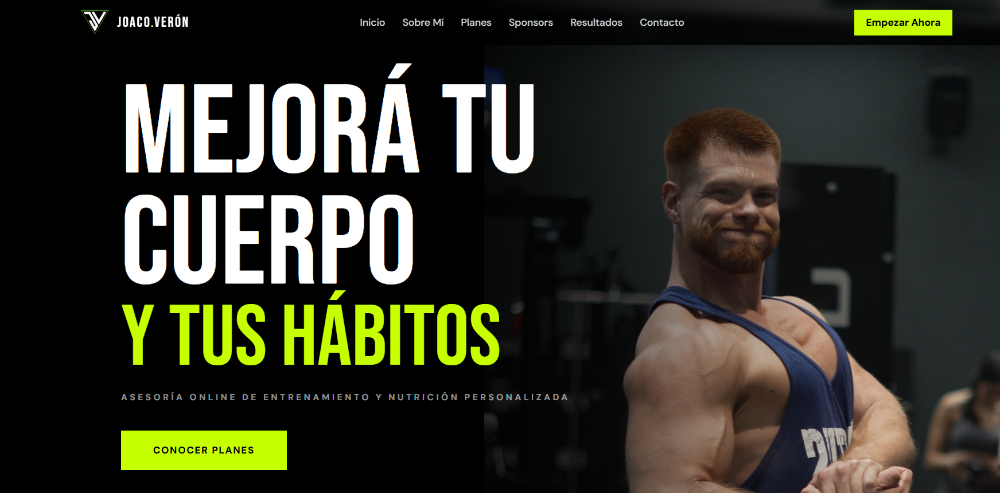
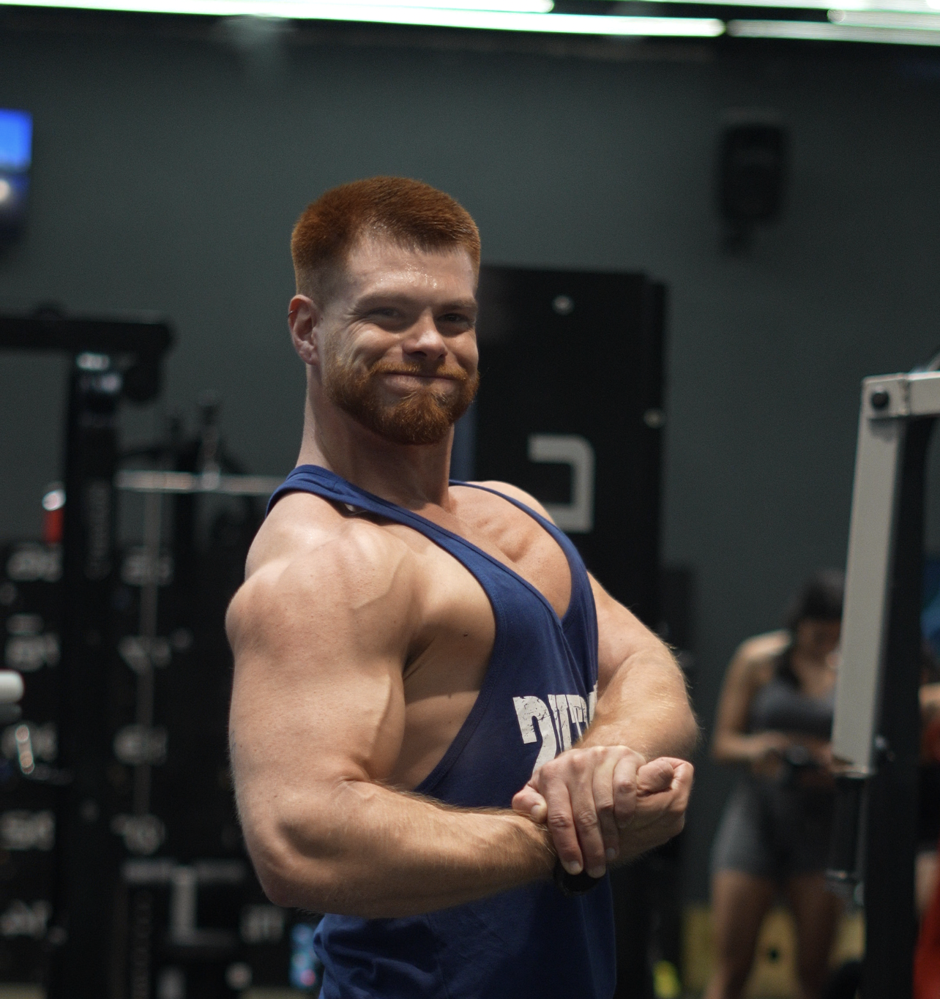

03 — Proyectos
Trabajo real
 Datos & BI
Datos & BI
Dashboard KPIs de Producción
Dashboard interactivo en Power BI con visualización UX/UI optimizada para seguimiento de KPIs de producción en tiempo real.
Informes Comparativos — Cuartos Congelados
Dashboard mensual 100% interactivo: KPIs por producto, filtros dinámicos, gráficos comparativos, análisis de márgenes. Hacé click para probarlo.
 Automatización
Automatización
Automatización de Reportes Contables
Scripts en Python para limpieza, procesamiento y carga masiva de datos contables, eliminando 6-8 horas de trabajo manual por mes.
 UX/UI & Dev
UX/UI & Dev
Módulo de Software — Depofis
Desarrollo de módulo para automatización de carga de datos de deportistas. Front-end en Figma y JS, backend con Next.js y Node.js.
Küme — Estrategia de Marca Completa
Brand Bible de 40+ páginas, identidad visual completa, calendario de 30 días, landing page funcional y estrategia de posicionamiento para agencia de marketing.

UX/UI & DevJoaquín Verón — Personal Trainer IFBB
Landing page completa: hero, 4 pilares de servicio, 3 planes de precios, testimonios verificados, sponsors y CTAs directos a WhatsApp. Responsive y en producción.

UX/UI & DevCICLO — Landing Web para Consultora de IA
Landing page completa para consultora de implementación de IA. Partículas animadas, scroll effects, método interactivo y estadísticas en tiempo real. Deploy en Vercel.
Tecnorain + Tecnofix — Estrategia Digital
Estrategia de contenido para dos marcas técnicas. Calendarios de 30 días, pilares editoriales, voz de marca, guías de hashtags y CTAs para Instagram y Facebook.